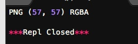

在Python中，安装第三方模块，是通过setuptools这个工具完成的。Python有两个封装了setuptools的包管理工具：easy_install和pip。目前官方推荐使用pip。
Mac和linux本身自带pip，不用安装，在win下需要安装。这里不再过多叙述。
这里试着安装一个第三方库：Python Imaging Library，这是Python下非常强大的处理图像的工具库。一般来说，第三方库都会在Python官方的http://pypi.python.org网站注册，要安装一个第三方库，必须先知道该库的名称，可以在官网或者pypi上搜索，比如Python Imaging Library的名称叫PIL，因此，安装Python Imaging Library的命令就是：
pip install PIL（现在用pillow来代替PIL）
sudo pip install Pillow
处理图片的方法为：
# -*- coding: utf-8 -*-
from PIL import Image
im = Image.open('icon.png')
print im.format, im.size, im.mode
im.thumbnail((150,100))
im.save('thumb.jpg','JPEG')

将原图icon.png:
生成一个名为thumb.jpg的图片：
这两张图暂时没有看出明显的区别，需要深入研究。
默认情况下，Python解释器会搜索当前目录、所有已安装的内置模块和第三方模块，搜索路径存放在sys模块的path变量中：
>>> import sys
>>> sys.path
['', '/Library/Python/2.7/site-packages/pip-8.1.1-py2.7.egg',
'/System/Library/Frameworks/Python.framework/Versions/2.7/lib/python27.zip',... ]
想要添加自己的搜索目录可以：
>>> import sys
>>> sys.path.append('/Users/michael/my_py_scripts')
这种方法是在运行时修改，运行结束后失效。
第二种方法是设置环境变量PYTHONPATH这里不做详述。